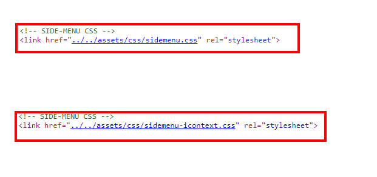
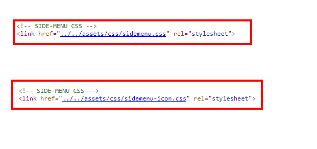
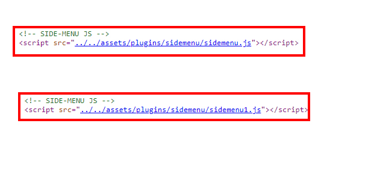

FAQS
How to Change Font Style ?
Step 1:
Go To _fonts.scss (assets/scss/custom/fonts/_fonts.scss )
if you want to change another font-family Go to the site Google Fonts And Slect One font Family and import In to style.css file
How to Select font Family
Example:

Step 2:
And paste Your Selected font-family in _fonts.scss
Example:
@import url("https://fonts.googleapis.com/css?family=Roboto:300,400,500,700,900");
Step 3:
And add the Your Selected font-family in _bootstrap-styles.scss(assets/scss/bootstrap/_bootstrap-styles.scss)
Example:
body {
margin: 0;
font-family: "Roboto", sans-serif;
font-size: 14px;
font-weight: 400;
line-height: 1.5;
color: $default-color;
text-align: left;
background-color: $background;
}
How to Change Logo ?
Go To "assets/images/brand" folder and replace your logo with Previous Logos within in image size. note: Please don't increase logo sizes. Replace your logo within given image size. otherwise the logo will not fit in particular place it disturbs the template design.
How to Enable Darktheme?
open custom.js file go to SWITCHER-toggle and remove comments for dark-mode to enable dark-mode style as shown in below
/*Theme Layouts*/
//$('body').addClass('dark-mode');
dark-mode as shown below
/*Theme Layouts*/
$('body').addClass('dark-mode');
How to Enable Color-header?
open custom.js file go to Header Styles. and remove comments for color-header to enable color-header style as shown in below
/*Header Styles*/
//$('body').addClass('color-header')
color-header as shown below
/*Header Styles*/
$('body').addClass('color-header')
How to Enable Dark-header?
open custom.js file go to Header Styles. and remove comments for dark-header to enable dark-header style as shown in below
/*Header Styles*/
//$('body').addClass('dark-header');
dark-header as shown below
/*Header Styles*/
$('body').addClass('dark-header');
How to Enable Light-header?
open custom.js file go to Header Styles. and remove comments for light-header to enable light-header style as shown in below
/*Header Styles*/
//$('body').addClass('light-header');
light-header as shown below
/*Header Styles*/
$('body').addClass('light-header');
How to Enable Gradient-header?
open custom.js file go to Header Styles. and remove comments for gradient-header to enable gradient-header style as shown in below
/*Header Styles*/
//$('body').addClass('gradient-header');
gradient-header as shown below
/*Header Styles*/
$('body').addClass('gradient-header');
How to Enable Horizontalmenu light?
open custom.js file go to Horizontal-menu Styles. and remove comments for light-hormenu to enable light-hormenu style as shown in below
/*Horizontal-menu Styles*/
//$('body').addClass('light-hormenu');
light-hormenu as shown below
/*Horizontal-menu Styles*/
$('body').addClass('light-hormenu');
How to Enable Horizontalmenu Color?
open custom.js file go to Horizontal-menu Styles. and remove comments for color-hormenu to enable color-hormenu style as shown in below
/*Horizontal-menu Styles*/
//$('body').addClass('color-hormenu');
color-hormenu as shown below
/*Horizontal-menu Styles*/
$('body').addClass('color-hormenu');
How to Enable Horizontalmenu Dark?
open custom.js file go to Horizontal-menu Styles. and remove comments for dark-hormenu to enable dark-hormenu style as shown in below
/*Horizontal-menu Styles*/
//$('body').addClass('dark-hormenu');
dark-hormenu as shown below
/*Horizontal-menu Styles*/
$('body').addClass('dark-hormenu');
How to Enable Horizontalmenu Gradient?
open custom.js file go to Horizontal-menu Styles. and remove comments for gradient-hormenu to enable gradient-hormenu style as shown in below
/*Horizontal-menu Styles*/
//$('body').addClass('gradient-hormenu');
gradient-hormenu as shown below
/*Horizontal-menu Styles*/
$('body').addClass('gradient-hormenu');
How to Enable Verticalmenu light?
open custom.js file go to Left-menu Styles. and remove comments for light-menu to enable light-menu style as shown in below
/*Left-menu Styles*/
//$('body').addClass('light-menu');
light-menu as shown below
/*Left-menu Styles*/
$('body').addClass('light-menu');
How to Enable Verticalmenu Color?
open custom.js file go to Left-menu Styles. and remove comments for color-menu to enable color-menu style as shown in below
/*Left-menu Styles*/
//$('body').addClass('color-menu');
color-menu as shown below
/*Left-menu Styles*/
$('body').addClass('color-menu');
How to Enable Verticalmenu Dark?
open custom.jsfile go to Leftmenu Style. and remove comments for dark-menu to enable dark-menu style as shown in below
/*Leftmenu Styles*/
//$('body').addClass('dark-menu');
dark-menu as shown below
/*Leftmenu Styles*/
$('body').addClass('dark-menu');
How to Enable Verticalmenu Gradient?
open custom.jsfile go to Leftmenu Style. and remove comments for gradient-menu to enable gradient-menu style as shown in below
/*Leftmenu Styles*/
//$('body').addClass('gradient-menu');
gradient-menu as shown below
/*Leftmenu Styles*/
$('body').addClass('gradient-menu');
How to Enable Boxed-Layout?
open custom.jsfile go to Layout-width Styles. and remove comments for layout-boxed to enable layout-boxed style as shown in below
/*Layout-width Styles*/
// $('body').addClass('layout-boxed');
layout-boxed as shown below
/*Layout-width Styles*/
$('body').addClass('layout-boxed');
How to Enable Scrollable-Layout?
open custom.js file go to Header-Position Styles. and remove comments for scrollable-layout to enable scrollable-layout style as shown in below
/*Header-Position Styles*/
// $('body').addClass('scrollable-layout');
scrollable-layout as shown below
/*Header-Position Styles*/
$('body').addClass('scrollable-layout');
How to Enable Sidemenu-Icon-with Text?
Please Follow the below steps
Step1:
Go To any HTML file in Header Section Can you change our sidemenu.css to sidemenu-icontext.css style link. check below Image
Step2:
Go To any HTML file in Script Section Can you change our sidemenu.js to sidemenu2.js style link. check below Image

How to Enable Sidemenu-Icon?
Please Follow the below steps
Step1:
Go To any HTML file in Header Section Can you change our sidemenu.css to sidemenu-icon.css style link. check below Image
Step2:
Go To any HTML file in Script Section Can you change our sidemenu.js to sidemenu2.js style link. check below Image
